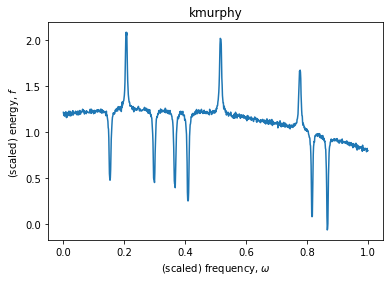

Given a data set representing the energy with respect to frequency, identify the location of any peaks and estimate the intensity (area within peak). The data is noisy and there is an underlying non-linear trend.

Sample spectral data (with 9 peaks).
You will need to
Identify the trend. It could be linear, quadratic, or exponential.
\[
bx + c
\qquad\mbox{or}\qquad
a x^2 + b x + c
\qquad\mbox{or}\qquad
a e^{b x} + c
\]
Identify number of peaks, and whether they are positive or negative.
For each peak, estimate
The center
The height above the underlying trend
The area within the peak.
Dataset
Each data file consists of two columns (frequency, energy) both are scaled so that
the input (frequency) is in the interval 0 to 1.
the output (energy) is in the interval -5 to 5.
I have two data files that are common to all of you and four individual data files each. The common data files are
The individual data files are determined by your student number. As per GDPR I should not publish your student number so instead you run the following code
with your student number.
To use the data files in the archive, you can use the following code which copies the archive to the same folder as your notebook and extracts contents to current folder. Note that it creates two folders
data — contains the data files (.txt) and images of the spectral peaks (.png).
output — empty folder that you will use for your output.
{kind=link}
{kind=link}
{kind=link}
{kind=link}
{kind=link}
{kind=link}